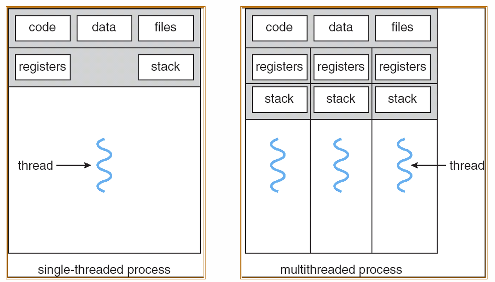
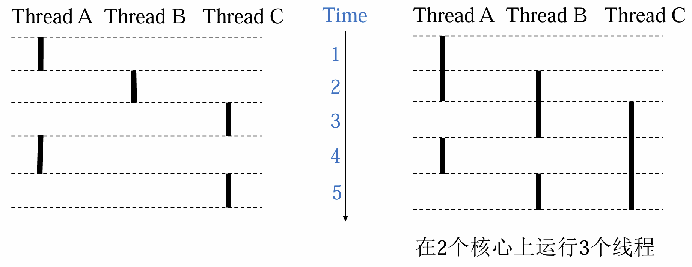

线程
线程引入¶
现在有一情形：数据库服务器如何同时处理来自多个客户端的数据查询请求，这些请求都是针对同一数据库的数据的
解决方法：
- 设置一个进程顺序处理所有请求；
- 设置多个进程分别处理多个请求；
存在的问题：
- 进程同步复杂
- 进程切换的系统开销大
线程概念¶
定义
- 线程是进程内一个相对独立的可调度的执行单元
线程属性
- 轻型实体：TCB+堆栈+一组寄存器
- 独立调度和分派的基本单位
- 可并发执行
- 共享线程资源
- 线程有生命周期，在生命其中有状态变化
线程基本状态
- 就绪态
- 运行态
- 阻塞态
传统概念下的进程¶
进程 = 进程上下文+ code,data,and stack
另一种角度的进程¶
进程 = 线程 + code, data, and kernel context
- 基本的CPU执行单元
- 并不单独拥有系统资源，只拥有其在运行中必不可少的资源，如线程ID、程序计数器、寄存器集合和堆栈
- 但同一进程下的不同线程共享进程拥有的全部资源
- 也有就绪、阻塞、运行三种状态
单线程进程与多线程进程¶

多线程与进程的关系¶
一个进程可以关联多个线程
- 每个线程有着自己的控制流
- 属于同一个进程下的线程共享所属进程的地址空间
- 每个线程有着自己的局部变量的堆栈（但对于其他线程来说并不是被保护的）
- 每个线程有着自己的线程id (thread ID, TID)
建立进程的概念是为了保护独立的地址空间
而建立线程的概念是为了更好地支持并发(线程切换的开销更小)
主线程¶
- 每个进程都是作为一个单一线程启动的，也被称为主线程
- 在之后的某个时间点，主线程创建了对等线程，然后两个线程并发的执行
- 并发线程执行
线程池¶
与进程关联的线程形成一个线程池，并不像进程一样有一个树状的继承关系

并发线程¶
在时间线上控制流有重叠的线程是并发的

上图中：A线程与B线程、A线程与C线程并发，B线程与C线程顺序执行
多线程模型¶
并发线程的执行¶
- 单核处理器通过时间片模拟执行
- 多核处理器可以实现真正的并行

线程支持¶
- 用户层的用户级线程
- 用户级线程位于内核之上，它的管理无需内核支持
- 内核层的内核级线程
- 内核级线程由操作系统来直接支持与管理
用户级线程与内核级线程的关系¶
- 多对一模型
- 一对一模型
- 多对多模型
Posix线程¶
POSIX简介链接 https://linux.cn/article-14201-1.html
与其说 POSIX 是一个东西，不如说是一个标签。想象一下，有一个盒子，上面贴着标签：POSIX，而盒子里是一个标准。该标准由 POSIX 所关注的规则和指令集组成。
POSIX 是可移植操作系统接口(Portable Operating System Interface)的缩写，其定义了应用程序（以及命令行 Shell 和实用程序接口）和 UNIX 操作系统之间的语言接口
Pthreads 约60个函数的标准接口，这些函数可操纵C程序中的线程
创建线程¶
int pthread_create(pthread_t* tid, pthread_attr_t* attr, func* f, void* arg)
- 当一个程序创建了多个线程以后，其在多核机和单核机上面运行会产生不同效果
- 多线程的执行速度并不一定比顺序执行快（如在单核机上运行时）
void* task(void* ID) {
long id = (long) ID;
printf("Task %ld started\n", id);
int i;
double result = 0.0;
for (i = 0; i < 10000000; i++) {
result = result + sin(i) * tan(i);
}
printf("Task %ld completed with result %e\n", id, result);
}
void* print_usage(int argc, char* argv[]) {
printf("Usage: %s serial|parallel num_tasks\n", argv[0]);
exit(1);
}
// 并行执行
void* parallel(int num_tasks) {
int num_threads = num_tasks;
pthread_t thread[num_threads];
int rc;
long t;
for (t = 0; t < num_threads; t++) {
printf("Creating thread %ld\n", t);
rc = pthread_create(&thread[t], NULL, task, (void*)t);
if (rc) {
printf("ERROR: return code from pthread_create() is %d\n", rc);
exit(-1);
}
}
}
// 顺序执行
void* serial(int num_tasks) {
long i;
for (i = 0; i < num_tasks; i++) {
task((void*)i);
}
}
int main(int argc, char* argv[]) {
if (argc != 3) {
print_usage(argc, argv);
}
int num_tasks = atoi(argv[2]);
if (!strcmp(argv[1], "serial")) {
serial(num_tasks);
} else if (!strcmp(argv[1], "parallel")) {
parallel(num_tasks);
} else {
print_usage(argc, argv);
}
printf("Main completed\n");
pthread_exit(NULL);
}
向线程传递参数¶
pthread_create()允许程序员将一个参数传递给线程并启动例程。
对于必须传递多个参数的情况，可以创建一个包含所有参数的结构体，然后在pthread_create()中传递一个指向该结构体的指针，可克服此限制
所有参数必须通过引用传递并强制转换为
(void *)
终止线程¶
void pthread_exit(void* thread_return)
- 当比他更高一级的进程返回时线程隐式终止；
- 当调用
pthread_exit时线程显式终止； - 如果主线程调用了
pthread_exit，会等待所有其他线程终止后终止主线程，整个进程将thread_return作为返回值； - 当调用
exit时，整个进程都会被终止。
int pthread_cancel(pthread_t tid
- 调用
pthread_cancel并不等于线程终止，它只提出请求。线程在取消请求发出后会继续运行； - 直到到达某个取消点。取消点是线程检查是否被取消并按照请求进行动作的一个位置
// 线程终止与取消实例
void *PrintHello(void *threadid)
{
long tid;
tid = (long)threadid;
printf("Hello World! It's me, thread #%ld!\n", tid);
pthread_exit(NULL);
}
int main(int argc, char *argv[]){
pthread_t threads[NUM_THREADS]; /* NUM_THREADS = 5 */
long taskids[NUM_THREADS];
int rc;
long t;
for(t = 0; t < NUM_THREADS; t++) {
printf("In main: creating thread %ld\n", t);
rc = pthread_create(&threads[t], NULL, PrintHello, taskids + t);
if (rc) {
printf("ERROR; return code from pthread_create() is %d\n", rc);
exit(-1);
}
}
/* Last thing that main() should do */
pthread_exit(NULL);
}
结合/分离线程¶
一个线程的结束有两种途径，一种是函数结束，调用它的线程也就结束，另一种方式是通过函数pthread_exit来实现
pthread有两种状态joinable状态(默认)和unjoinable状态。如果线程是joinable状态，当
线程函数自己返回退出时或pthread_exit时都不会释放线程所占用堆栈和线程描述符。
只有调用了pthread_join之后这些资源才会被释放。若是unjoinable状态的线程，这些资源在线程函数退出时或pthread_exit时自动会被释放
int pthread_join(pthread_t tid, void** thread_return)
- 连接是线程之间同步的一种方法
- pthread_join 阻塞线程直到tid线程终止
- 与linux中的
wait函数不同，pthread_join函数可以只等候特定的线程终止 - 一个线程只能响应一个
pthread_join()请求。对同一个线程尝试多个join操作会发生逻辑错误
int pthread_detach(pthread_t tid)
pthread_detach函数将线程tid分离出来- 默认情况下，线程创建时为可连接的
- 每个可连接线程应由另一个线程显式获取，或通过调用
pthread_detach函数来分离。